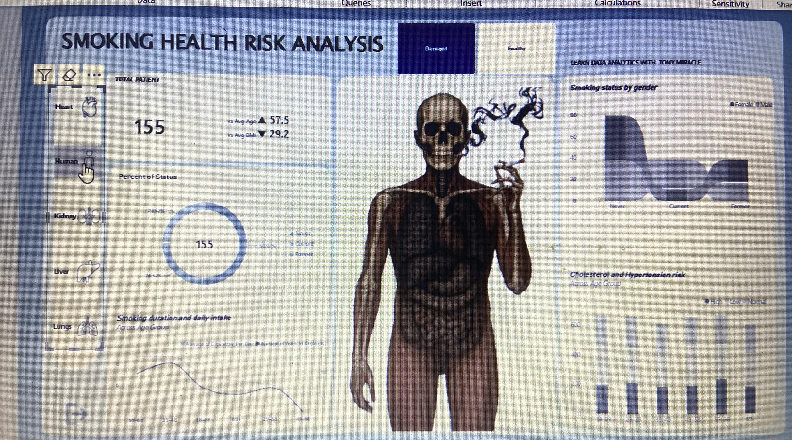

project smoking health risk
Explored how smoking habits relate to health outcomes. Built a dashboard showing risk by age, gender and smoking frequency, with key finding.
View ProjectA selection of my data analysis and dashboard work.

Explored how smoking habits relate to health outcomes. Built a dashboard showing risk by age, gender and smoking frequency, with key finding.
View ProjectOpen to roles, freelance and consulting work. Get in touch.